One job.
Done perfectly.
Fifteen purpose-built machines, led by the M5 template machine, covering templates and patterns, buttons, buttonholes, bartacking and pocket welting — grouped below so you can jump straight to the process you need.
Small footprint.
Large sewing area.
M5 fits an 80cm × 35cm sewing range into a 120cm × 110cm footprint, with a mechanical cutter for a clean, odor-free, non-yellowing edge, and a laser positioning system that removes the need for ironing or manual positioning.
- Laser positioning: integrated sewing and trimming lifts efficiency by 40%
- Mechanical cutter for a clean, odor-free, non-yellowing cut
- Easy entry and exit of the sewing line
- Optional IoT, hidden laser, bottom-thread detection and vacuum suction
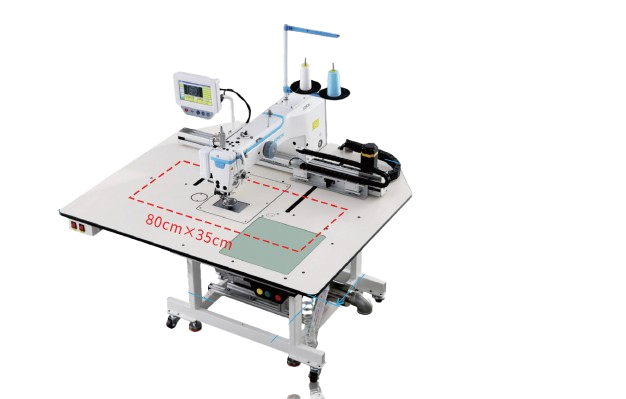
Fourteen more specialists.
Grouped by the job they do, so you can go straight to templates, buttons, buttonholes, bartacking or pocket welting.
Programmable template and pattern sewing
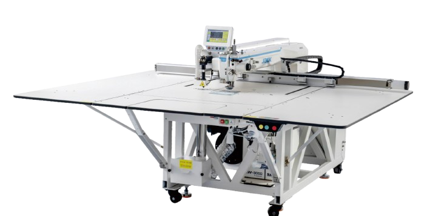
Super high-speed template machine that sews without skipping thread even at 3600 rpm, making up to 20 extra pieces a day.
View spec sheet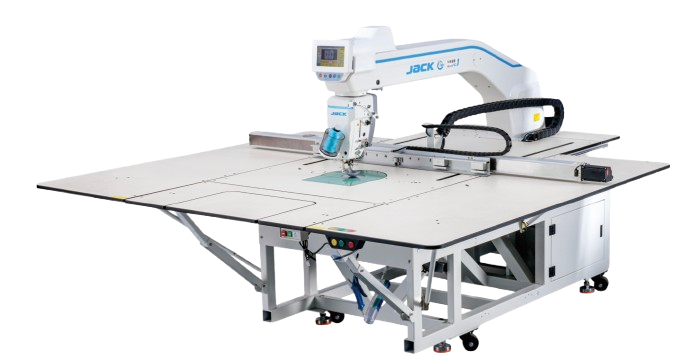
The spirit-spider thread control system cuts thread breaks by 80% and lifts sewing speed by 20%, needing re-threading only once a day.
View spec sheet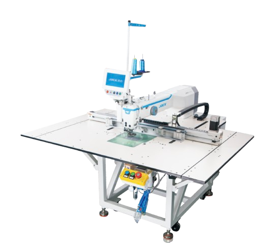
Small intelligent template machine built for assembly lines, with a folding 1500×1510mm table, quick hook-replacing window and wireless remote control.
View spec sheet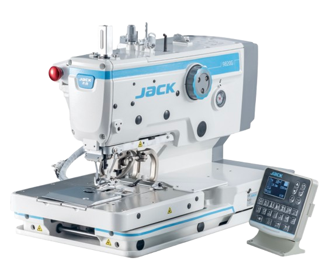
Programmable electronic pattern sewing machine with double-hook threading and a 99.99% thread-holding success rate on every stitch.
View spec sheet
A full range of programmable pattern sewing machines from 130×100mm up to 1000×400mm sewing range, with intelligent template recognition.
View spec sheetFlat, vertical and automatic button feeding
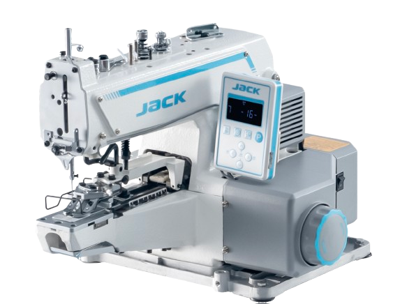
Flat and vertical button attach machine, switching easily between button types with a stepper presser-foot lifter for quiet, long service life.
View spec sheet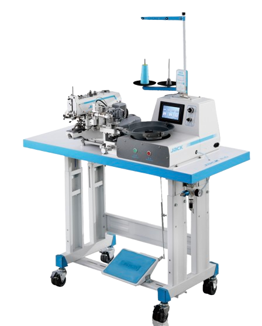
Integrated computerized button attaching machine with a quiet stepping motor and a choice of automatic button feeding devices.
View spec sheet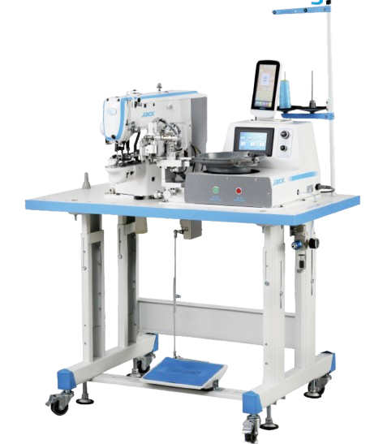
High-speed electronic button attaching with an automatic button feeder. One machine replaces the work of three people, with a 10-second button change.
View spec sheetKeyhole and lockstitch buttonholes
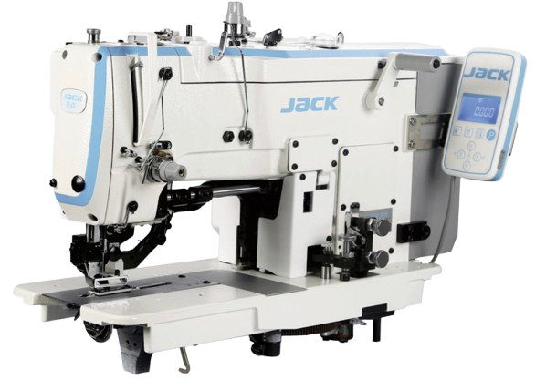
New integrated electronic lockstitch buttonholing machine with a dot screen display and short thread remaining, so there's no need to trim again.
View spec sheet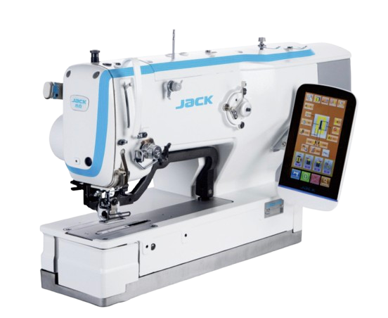
Super-fast computerized buttonhole machine with strong knit adaptation and an intelligent touchscreen for quick switching between stitch types.
View spec sheetReinforcement stitching for stress points
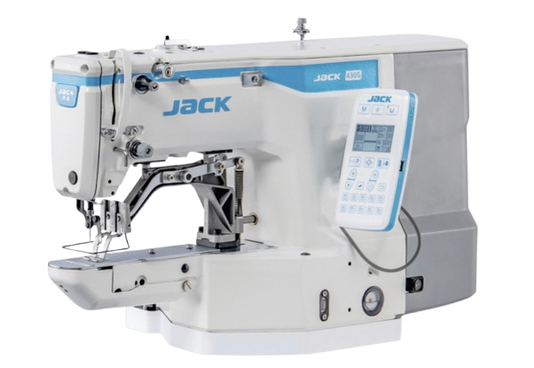
High-speed electronic bartack machine with 12 built-in patterns and strong thick-fabric ability, for pants, denim, luggage and shoes.
View spec sheet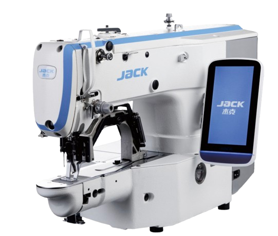
Multi-function computerized bartack machine for shirts, jeans, non-woven bags, magic tape, shoes and bags — one machine with wide use, economic and useful.
View spec sheetAutomated pocket welting and denim splicing
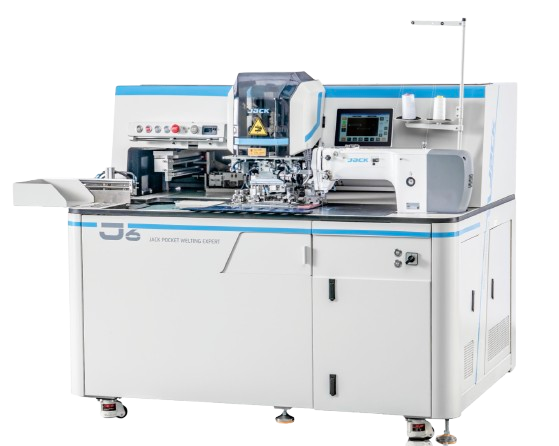
The pioneer of full-automatic pocket welting, sewing single or double jetted pockets, zippers and flaps with quick reorder folding and closing technology.
View spec sheet
Power-saving feed-off-arm machine with a cantilever cylindrical structure for wide-ranging application on shirts, denim and other fabric splicing.
View spec sheet